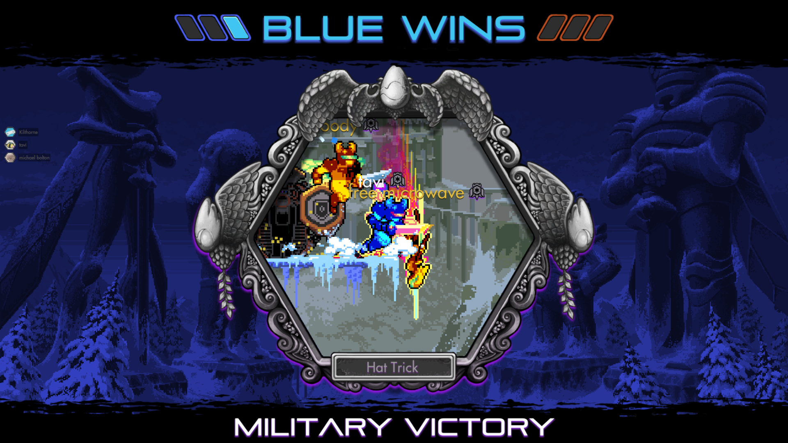

Killer Queen is an arcade game designed by BumbleBear and played on two side by side arcade cabinets with five players on each team.
There are three ways to win: by killing the other team's queen 3x, by filling all of the berry holes in your team's hive, or by moving the snail into the goal on your team's side of the map.
Each team has one queen and four workers. The queen has a total of three lives and the workers have unlimited lives.
Workers can use berries by jumping into holes in the hive to fill them, or by carrying one to a gate.
Gates are used to gain speed or to become warrior/military characters that carry swords and no longer ride the snail or move berries.
KQA (called KQ within the community) is relatively unknown, but there are cabinets located across the country and the playerbase is extremely close-knit and dedicated.
Based on the arcade game, BumbleBear partnered with LiquitBit to bring KQ to people's homes and created Killer Queen Black.
Killer Queen Black is a cross-platform multiplayer game available on Steam, XBox, Switch, Stadia, and Luna.
Winning in KQB is the same as in KQA, but there are major gameplay differences.
KQB is played with three workers instead of four.
New elements include an attack and dive button, the ability to throw berries into holes and at other players, mace and gun warrior characters, and a shield upgrade.
The playerbase for KQB is likely smaller than that of KQA. The community is active in running leagues and events online.
I've been playing KQB for almost 2.5 years and have become deeply involved in the online community.
I've made dozens of close friends, talk with people from accross the US and in Canada.
I play every season in the community-run league and I've been involved with LiquidBit as a volunteer to provide advice and resources within the community.
Here's a picture of me in-game!
